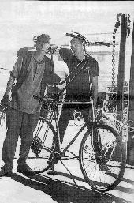
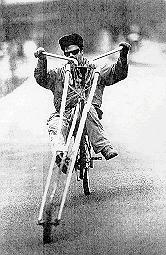
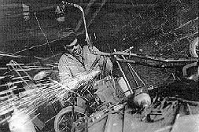
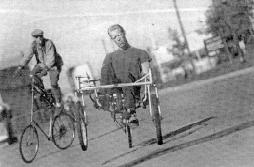
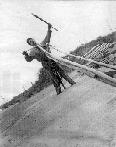
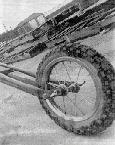

|  | Children of the Chicken Rat.Written by Sari Gordon.Photos by Anon. |
With the pop of an oxyacetylene torch, the backyard of the small Southeast Minneapolis home bursts into light. The gassy glow illuminates tangled piles of rusty bike parts - tires, seats, frames, handlebars, gears - and barbecue grills, a jungle gym, garbage and recycling bins over-filled with bottles.
The hissing torch also brings Fat Chick Rick to life. Tomorrow is his birthday, and tonight he is pleasantly gliding into a swollen drunken bubble. With a beer in one hand, a heavy chain strapped diagonally across his dirty sweatshirt, a Fu Manchu mustache and a large spike through his septum, Rick looks as though he's been drunk for years. Standing near a spidery, disjointed bicycle, he blurts out to the guy with the torch, ``hey, bring that over here! My seat's been crushing my balls - let's fix it.''
Jacob brings the torch in for a spot job on a low-slung, high-flown bike sitting in the dirt. The black frame is all that remains of a once-normal bicycle. A 5-foot set of forks juts out the front and leads to a dragster-like tiny wheel. The U-shaped handlebars lunge forward, while the grips hang down toward the seat. Behind the seat is a dragonfly-blue sissy bar that rises up over the rider's head like an alarmed tail.
|
As the two repair Fat Chick's seat, a mass of bikes become visible among the piles of parts scattered around the yard. There's the Tennessee Stud, a long and low, bright-yellow recumbent bike with handlebars that jut out from under its rider's hips. A black-and-pink-speckled tandem monstrosity - built around the time of Clint Eastwood's movie The Unforgiven - is called the Unridden. There are also the Silver Coffin and That Goddamn Bike. This is one of the Hard Times Bike Club's hangouts. Formed four years ago by a couple of guys and a welding torch, tonight's group is 25 strong. If you haven't seen the bikes at the Hard Times Cafe on the West Bank (for which the club is named), Powderhorn Park's annual May Day Parade, the Blind Lizard Rally, St. Paul's Grand Old Day or just clattering around town, you haven't been looking hard enough. The bike club has no dues, no regular meetings or rides - that would be much too organized for a group with so many homeless members, drifting members, members without phones and members dedicated to pursuing liberty. Meetings happen by chance. They may, on occasion, gather for a parade. But mostly they just hang out - at the Southeast Minneapolis house with the skull-and-crossbones flag, the Hard Times or anywhere else that beer is available. |
 |
Part of the HTBC aesthetic is anti-money and anti-retail. These guys wouldn't be caught dead on the flashy, vintage-looking (and expensive) Lava Lounge-esque choppers and low-riders, or the latest aluminum rock-hoppers by Cannondale. Members of the HTBC gang are kids (including Sgt. Mark, Tank, Li'l Bob, Skitch, Marker Face, Strange, Salty and Shook) who pride themselves on the looming, stare-inducing build of tall bikes. Made mostly from leftover parts, tall bikes (or high bikes) are sometimes 8 feet high, created by welding one bike frame on top of another and rearranging the gears and cables to the new height.

Tall bikes inspire viewers to gawk, rather than smirk. In Uptown a few weeks ago, a lone club member whizzed through the traffic of beautiful people. The biker, sporting dirty denim, hovered over the stopped cars at Lake and Hennepin like a raven gliding to a stop. Onlookers may have suspected that some kind of artsy Uptown parade was about to be announced - until they noted that the riders' visage was funeral-solemn. Without looking down or side-to-side as he rode past the large audience of captive drivers, the bicyclist, without a hint of self-consciousness or irony, seemed as cheerless as a soldier heading into battle. Even a lone rider on a tall bike can induce visions of a skeletal Cirque du Soleil mutinized by Alfred Jarry.
After seeing their first tall bike, most people are curious about two things: How do the kids get up there and how do riders stop the bikes? Mounting a tall bike, like getting started on any bike, requires a push-off and a leg-over. The difference with high bikes is that once a rider pushes himself or herself into motion, he or she must clamber up the frame, hop on and quickly start pedaling. Practicing this feat can be a hairy experience accompanied by numerous dangerous tumbles on the way.
In order to stop a bike in traffic, tall-bike riders must finesse the brakes and balance enough to slide right up to a stop sign or traffic signal, then grab on.

A mechanic and artist, 38-year old Per Hanson is president of the HTBC. Resembling the toothy helicopter-bicycle [sic] pilot in Road Warrior, he has harshly Scandinavian features: light eyebrows, blonde hair and a pinkish complexion. Like most members, Hanson wears his ``colors'', a tattered piece of material with a skull-and-crossbones insignia, stitched to the back of his sleeveless denim jacket. He lives ``minimally'', having few possessions and no real job. Though his demeanor is gentle and quiet, when he laughs, his mouth becomes a stretched and bony grin, his skinny neck craning from under his leather jacket.
Hanson is not eager to disclose his past or his means of support. He says he is dedicated to his life of simplicity and therefore requires no job title or even home. He has lived for 10 years in a small, rented room, furnished with a desk, a small futon and one framed picture of himself with two other bike-club members, their hands up against a wall, displaying their colors. Hanson also creates small, kinetic sculptures. Powered by cranking a fan blade, the contraptions are more-colorful, scaled-down versions of his bikes.
On the landing-strip-wide road in front of Prospect Auto in Southeast Minneapolis, Hanson and Jacob (the rider spotted earlier in Uptown) inspect the night's take from anonymous donors. The club spreads the word that they will recycle used bike parts, and so, in the night, parts appear tucked away behind the parked cars around the large garage. ``There's no bigger tangle than the tangle of old bike parts. It's a really Zen thing to untangle them'', Hanson says.
After using lawn-mower engines and snowblowers to build motorized bikes, Hanson, the Pied Piper of the HTBC, plans to build ``the ultimate in homeless transportation'', a shopping-cart-cum-bicycle.
As lead designer, Hanson mentors his young friends in bicycle maintenance and repair. In return, his ``sweet road vultures'', as he calls them with macabre affection, serve as his test pilots. Many of the club's members have, in addition to their crude tattoos, grisly scars from the testing sessions they perform. As Hanson leads a small crew of friends through the towering junkyard, he describes his constant ``war of attrition'' with the bikes. The wheeled vehicles have a high mortality rate, often from theft, but more likely from stressful engineering design. The one law of physics that tall bikes don't ignore is, as Hanson jokes, ``Hüsker Dü, man, everything falls apart.''
Whether the bike parts are stolen depends on the member you ask. Those who say they never steal parts are as adamant as those who say they do. Justin says, with the somber earnestness of a true disciple, ``You don't steal other people's bikes''. He and Jacob prefer to save their enmity for friendly competition with the Wild Boars, a rival bike gang of ``goody-goody college kids'' who build fancy lowriders and choppers using expensive welding equipment. They reserve their disdain for yuppies with bike racks on their Saabs.
Another member, overheard one night at the Hard Times Cafe, tries to recruit a friend, saying, ``If you help me steal a back tire, I'll help you build [a tall bike].'' Stealing bike parts is justified, he says, if a bike has been locked to a meter or signpost long enough to be deemed abandoned.
Hanson's favorite test pilot is 14-year-old Fred. Fred and her friend, Genna, 15, are known by their joint moniker, Two Bits. The girls are the most fearless riders, he says, adding: ``Their aggressiveness helps me build better bikes.'' When asked what she hates the most, Genna says brightly: ``Rich white boys that ride around on cool bikes that they didn't even make.'' ``We're a family,'' she says. ``We look out for each other.'' Sometime after midnight, Hanson glides up on his yellow bike, smiles and then disappears into the cafe. He quietly returns to the group of four young women and presents a Buddy's Orange Soda to Fred; her face brightens at the gift.
There are four female members in the Hard Times Bike Club. Many of the kids and their friends are homeless, have been expelled from school or have escaped treacherous homes. Most seem to be looking for that missing patronage that Joseph Campbell claimed was the impetus for nefarious gang memberships. Inside the cafe on the bulletin board is a handwritten note: ``Sarah Phone Home Mom''. Genna and Fred say they are happy with the lessons they are learning on the streets and in the garage where Hanson stows his equipment.
The affection Hanson has for his young friends is purely innocent as well, Genna says. Hanson never has hit on younger members, she says, and there is ``a lot of respect for each other'' among the circle of friends. She and the other girls treat Hanson with paternal affection, a relationship that can be granted only through trust, which Genna says has never been breached.
``If they see the bike club as a surrogate family, that's OK with me,'' Hanson says a few nights later over a drink. He's waiting for Justin, Airaq, Rick, Jacob, and others to show up at the open-air bar of The Joint, a biker hangout on the West Bank. ``I think there's a lot of blatant ageism [in our culture]. Older people treat younger people as property.''
Jacob takes his involvement with the group seriously. Though he has a good sense of humor once he warms up, when he rides his tall bike solo, he bears a grave and purposeful look. Hanson admires Jacob's ``more moralistic code of behavior'' but thinks of the group more of an art project and part-time political cause.
 
Many of the members are dead serious about the club colors. Some have HTBC tattoos to signal the depth of their commitment. Hanson, though, is willing to give a tall bike to anyone who asks for it and says he'll do ``everything possible'' to supply club colors. When one member abruptly quit the gang, Hanson threw a tantrum in the street, throwing his skull and crossbones on the ground and stomping on them before storming off. When the errant member came to Hanson asking forgiveness, the president returned the colors - but not before sending him a message of admonition: He washed them first.
As the feeling of drunken fraternity grows at the rear of The Joint, Hanson turns quiet. But the others jubilantly roar out the story of the club mascot: the Chicken Rat. One club member's crude taxidermy merged a rooster's head with a rat's body. The makeshift hybrid was kept in a freezer, the group's ``petting zoo''. And now? Jacob silences the crowd as he describes the creature's sad demise. ``He accidentally got thawed out at a party, so we had to throw him away.''
| Copyright 2003 Megulon Five <megulon5@dclxvi.org>. | Last modified 10 October 1997. |